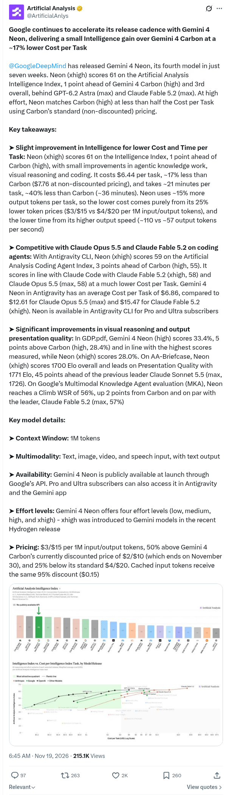

7주 사이 4번째 모델, 숫자로 본 네온의 자리

아티피셜 어낼리시스 표현을 빌리면 네온은 구글이 7주 사이에 내놓은 네 번째 모델입니다. 이름도 원소 주기율표처럼 카본, 하이드로젠, 아르곤, 네온으로 이어지니 헷갈리는 게 당연합니다.
이번 모델의 성격은 한 줄로 정리됩니다. 최상위 모델과 거의 같은 점수를, 더 싸고 빠르게. 그래서 "제일 똑똑한 모델"보다 "매일 돌리는 업무에 넣을 모델"을 찾는 분들에게 더 중요한 소식입니다.
제미나이 4 네온 가격은 얼마인가?
구글 소개 글·모델 카드·아티피셜 어낼리시스 값을 한 표에 모았습니다.
| 항목 | 네온 | 참고: 카본 |
|---|---|---|
| 입력 100만 토큰 | 3달러 | 정가 4달러, 11월 30일까지 할인가 2달러 |
| 출력 100만 토큰 | 15달러 | 정가 20달러, 11월 30일까지 할인가 10달러 |
| 캐시 입력 100만 토큰 | 0.15달러(입력가의 95% 할인) | 같은 95% 할인 구조 |
| 컨텍스트 창 | 100만 토큰 | |
| 한 번에 받는 출력 | 기본 6만 4천 토큰, 백그라운드 생성 시 최대 100만 토큰 |
카본 가격과 할인 종료일은 아티피셜 어낼리시스가 정리한 값입니다. 여기서 재미있는 점이 하나 보입니다. 정가 기준으로 네온 단가는 카본보다 25% 낮지만, 카본 할인이 이어지는 11월 30일까지는 오히려 네온이 50% 비쌉니다.
감을 잡기 쉽게 단순 계산을 해 보겠습니다.
입력 50만 토큰, 출력 10만 토큰짜리 작업 하나라면 네온은 3달러, 카본은 정가로 4달러, 할인가로 2달러입니다.
다만 네온은 작업당 출력 토큰을 카본보다 약 15% 더 쓰는 것으로 측정됐으니, 실제 청구액은 이 계산보다 조금 올라간다고 보시면 됩니다.
지금 어디서 쓸 수 있나?
개발자는 API로, 일반 이용자는 Pro·Ultra 구독으로 쓸 수 있습니다. 구글 소개 글에 나온 경로를 이용자별로 나누면 이렇습니다.
| 이용자 | 경로 | 조건 |
|---|---|---|
| 개발자 | 구글 AI 스튜디오(Google AI Studio), 안드로이드 스튜디오의 제미나이 API | API 유료 등급 |
| 개발자·구독자 | 구글 안티그래비티(Google Antigravity) | 유료 구글 AI 프로·울트라 구독 |
| 기업 | 제미나이 포 비즈니스(Gemini for business) | API 또는 모델 선택 메뉴 |
| 일반 이용자 | 제미나이 앱 모델 선택 메뉴 | 구글 AI 프로·울트라 구독 |
| 워크스페이스 고객 | 제미나이 앱 | 2026년 11월 24일 09:07 KST 배포 안내 |
마지막 줄은 구글에서 제미나이 API와 AI 스튜디오를 맡고 있다고 소개한 로건 킬패트릭(Logan Kilpatrick)이 엑스에 올린 소식입니다. 회사 계정으로 제미나이를 쓰는 분이라면 이제 앱에서 네온을 고를 수 있다는 뜻입니다.
지능 지수 61점은 어느 정도 실력인가?

전체 3위이고, 구글 최상위 모델 카본(high 설정)보다 1점 높습니다. 앞에는 GPT-6.2 아스트라(max)와 클로드 페이블 5.2(max)만 있습니다. 이 점수는 네온의 최고 사고 수준인 xhigh 설정에서 나왔습니다.
| 비교 항목 | 네온(xhigh) | 카본(high) |
|---|---|---|
| 지능 지수 | 61점 | 60점 |
| 작업당 비용 | 6.44달러 | 7.76달러(정가 기준) |
| 작업당 시간 | 약 21분 | 약 36분 |
| 초당 출력 토큰 | 약 110개 | 약 57개 |
| 코딩 에이전트 지수 | 59점 | 55점 |
이 점수는 11월 19일 측정값으로, 이 글 작성 시점보다 닷새 앞섭니다.
흥미로운 대목은 비용이 싸진 이유입니다.
아티피셜 어낼리시스는 네온이 더 똑똑하게 토큰을 아낀 게 아니라, 토큰 단가가 낮아서 싸졌다고 분석했습니다.
시간이 줄어든 것도 출력 속도가 두 배 가까이 빨라진 덕분입니다.
구글은 32%, 독립 평가는 17%, 누구 말이 맞나?
둘 다 맞습니다.
비교한 설정이 다릅니다.
구글 소개 글은 기본값인 high 설정의 네온이 카본보다 작업당 비용이 32% 낮다고 했고, 아티피셜 어낼리시스의 17%는 가장 비싼 xhigh 설정의 네온을 카본(high)과 견준 값입니다.
같은 모델이라도 사고 수준을 어디에 두느냐에 따라 할인 폭이 두 배 가까이 달라지는 셈입니다.
그래서 비용이 중요한 업무라면 기본 high부터 쓰고 결과가 아쉬울 때만 xhigh로 올리는 편이 계산상 유리합니다. 네온은 low, medium, high, xhigh 네 단계를 제공합니다.
카본·하이드로젠·네온, 내 일에는 무엇이 맞을까?
구글이 2026년 11월 24일 05:44 KST 엑스에 올린 카드 설명을 정리하면 역할 분담이 분명합니다.
- 카본: 가장 어렵고 긴 호흡의 프로젝트
- 하이드로젠: 빠른 일상 실행
- 네온: 복잡한 코딩, 분석, 기업용 업무에서 깊이와 효율의 균형
모델 카드에 따르면 네온은 카본을 바탕으로 조정한 모델이라, 두 모델의 뿌리는 같습니다. 구글은 안티그래비티에서 네온이 여러 하이드로젠 하위 에이전트를 지휘하는 역할도 맡을 수 있다고 소개했습니다. 정리하면 "매일 여러 번 돌리는 복잡한 일"이 네온의 자리입니다.
딥마인드의 양자 회로 소식은 네온 이야기일까?
엄밀히는 아닙니다.
구글 딥마인드(Google DeepMind)는 2026년 11월 24일 02:00 KST 게시물에서 제미나이 4 에이전트 팀으로 새 양자 회로를 만들어 미래 시뮬레이션 비용을 최대 10분의 1로 줄였다고 밝혔습니다.
특정 모델 이름은 적지 않았습니다.
네온 공개 뒤 같은 주에 나온 소식이지만, 네온 성능의 근거로 쓰기는 어렵습니다.
확인 현재까지 확인된 내용: 어느 문서에 무엇이 있나
- 가격과 이용 경로, 32% 비용 비교: 구글 공식 소개 글(글로벌판과 한국어판 모두 같은 내용)
- 카본 기반 모델이라는 점, 출력 한도, 지식 기준 시점: 딥마인드 모델 카드
- 평가 점수와 순위, 작업당 비용·시간, 카본 할인 종료일: 아티피셜 어낼리시스 스레드
- 워크스페이스 배포: 킬패트릭 게시물
미확인 아직 확인하지 못한 것
평가 숫자는 아티피셜 어낼리시스 원문에서 확인했지만, 평가를 직접 다시 돌려 재계산하지는 않았습니다. 양자 회로 비용 절감이 독립적으로 재현됐는지는 미확인입니다. 국내 원화 결제 금액과 구독 요금은 이 글의 범위 밖입니다.
이번 소식은 누가 전했나?
| 누구 | 정체 | 이 글에 가져온 내용 |
|---|---|---|
| 구글(Google) | 제미나이를 만든 회사의 공식 계정 | 모델 가족 구성 설명 |
| 로건 킬패트릭(Logan Kilpatrick) | 제미나이 API·AI 스튜디오 담당(계정 소개) | 워크스페이스 배포 |
| 아티피셜 어낼리시스(Artificial Analysis) | AI 모델 독립 비교 기관(계정 소개) | 점수, 비용, 속도 |
| 구글 딥마인드(Google DeepMind) | 구글의 AI 연구 조직 | 양자 회로 연구 |
자주 묻는 질문
제미나이 4 네온은 무료로 쓸 수 있나요?
구글 소개 글이 밝힌 경로는 API 유료 등급과 구글 AI 프로·울트라 구독입니다. 무료 이용 방법은 소개 글에 따로 적혀 있지 않습니다.
네온은 언제까지의 지식을 알고 있나요?
모델 카드에 적힌 지식 기준 시점은 2026년 3월입니다. 모델 카드는 분야에 따라 이보다 지식이 덜 최신일 수 있다고도 적었습니다.
한국어로 된 공식 설명도 있나요?
있습니다. 구글 코리아 블로그에 같은 소개 글의 한국어판이 올라와 있고, 가격과 이용 경로가 원문과 같게 번역되어 있습니다.
참고 자료
- 구글 엑스 게시물, 제미나이 4 가족 속 네온의 위치
- 로건 킬패트릭 엑스 게시물, 워크스페이스 배포
- 아티피셜 어낼리시스 엑스 평가 스레드
- 구글 딥마인드 엑스 게시물, 양자 회로 연구
- 구글 블로그 제미나이 4 네온 소개(글로벌판)
- 구글 코리아 블로그 제미나이 4 네온 소개(한국어판)
- 딥마인드 제미나이 4 네온 모델 카드
관련 글
글: 에이전트빅보드 편집부. 이 글은 AI 도구로 자료를 모으고 초안을 쓴 뒤, 편집부가 공식 자료와 하나씩 대조해 검수했습니다. 숫자와 일정은 2026년 11월 24일 KST 기준입니다. 에이전트빅보드 소개와 편집 방식
매일 돌리는 작업이라면 네온의 속도와 카본의 깊이 중 어느 쪽을 고르시겠습니까?
AI 도구로 자료 수집과 초안 작성을 돕고, 편집부가 공식 자료와 대조해 검수했습니다.